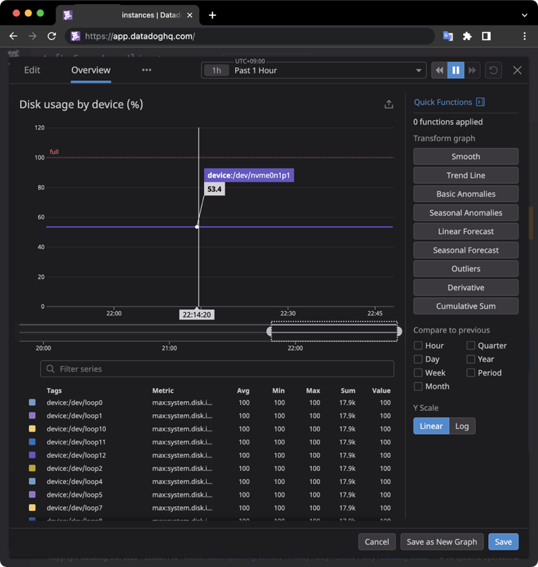
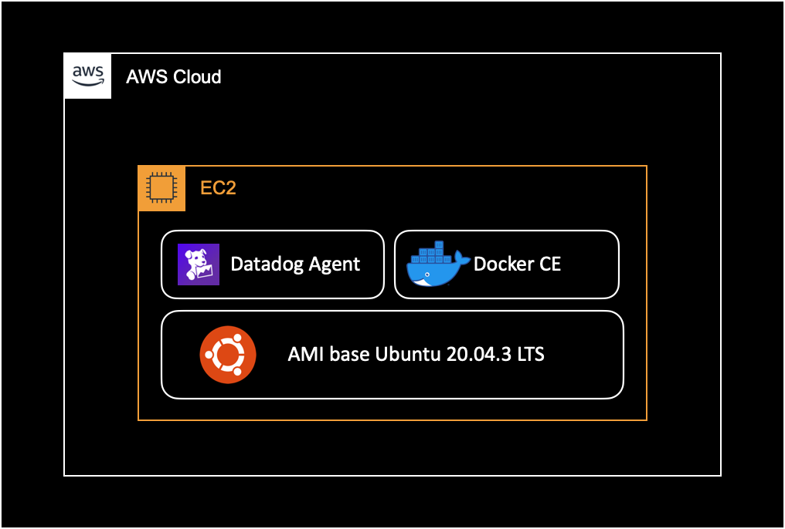

Datadog disk metric error
개요
EC2 인스턴스에 설치된 데이터독 에이전트에서 Unable to get disk metrics ... [Error 13] Permission denied 에러가 지속 발생할 때 해결하는 방법을 소개합니다.
증상
EC2 인스턴스에서 데이터독 에이전트 v7.37.1 를 사용중입니다.
도커 컨테이너의 디스크 메트릭 관련 에러 로그가 지속 발생하는 증상입니다.
데이터독 에이전트 로그
증상이 발생할 때 출력되는 데이터독 에이전트의 로그 내용은 다음과 같습니다.
문제되는 로그의 레벨은 Warning이고, 데이터독 대시보드에 보이는 메트릭 수집 자체에는 영향을 주지 않지만, 어드민 관점에서 불필요하게 반복 발생하는 로그는 필수 제거 대상입니다.
$ tail -10 agent.log
2022-06-30 01:51:38 UTC | CORE | WARN | (pkg/collector/python/datadog_agent.go:124 in LogMessage) | disk:e1dffb2bef34567f | (disk.py:135) | Unable to get disk metrics for /var/lib/docker/containers/471a5aa5d8266ade61d358c1024d704a6b0a3eb7d75f442a01aee362c38cc5dd/mounts/shm: [Errno 13] Permission denied: '/var/lib/docker/containers/471a5aa5d8266ade61d358c1024d704a6b0a3eb7d75f442a01aee362c38cc5dd/mounts/shm'. You can exclude this mountpoint in the settings if it is invalid.
2022-06-30 01:51:38 UTC | CORE | WARN | (pkg/collector/python/datadog_agent.go:124 in LogMessage) | disk:e1dffb2bef34567f | (disk.py:135) | Unable to get disk metrics for /run/docker/netns/0f39da799d9d: [Errno 13] Permission denied: '/run/docker/netns/0f39da799d9d'. You can exclude this mountpoint in the settings if it is invalid.
2022-06-30 01:51:38 UTC | CORE | WARN | (pkg/collector/python/datadog_agent.go:124 in LogMessage) | disk:e1dffb2bef34567f | (disk.py:135) | Unable to get disk metrics for /var/lib/docker/containers/0c3c6d543bfe9dc3bde28599abc0e06e599775a720bc5b8b999a0154b413100d/mounts/shm: [Errno 13] Permission denied: '/var/lib/docker/containers/0c3c6d543bfe9dc3bde28599abc0e06e599775a720bc5b8b999a0154b413100d/mounts/shm'. You can exclude this mountpoint in the settings if it is invalid.
2022-06-30 01:51:38 UTC | CORE | WARN | (pkg/collector/python/datadog_agent.go:124 in LogMessage) | disk:e1dffb2bef34567f | (disk.py:135) | Unable to get disk metrics for /run/docker/netns/de516beeee44: [Errno 13] Permission denied: '/run/docker/netns/de516beeee44'. You can exclude this mountpoint in the settings if it is invalid.
위와 같은 에러 메세지가 끊임없이 반복 발생하는 증상입니다.
그러나 데이터독 대시보드에 접속해서 해당 인스턴스를 확인해보면 디스크 메트릭을 포함한 모든 메트릭을 정상적으로 수집해오고 있는 상황이었습니다.

환경
문제가 발생한 EC2 Instance의 환경은 다음과 같습니다.

EC2 인스턴스 내부에서 여러 개의 Docker 컨테이너가 동작하고 있습니다.
- Docker : Docker CE 20.10.7 (linux/amd64)
- OS : Ubuntu 20.04.3 LTS
- Datadog Agent : 7.37.1
원인
EC2 안에서 돌고있는 도커 컨테이너에 디스크 메트릭을 수집하려고 계속 시도하면서 에러 메세지가 발생합니다.
해결방법
데이터독 에이전트 설정에서 도커 컨테이너 관련 파일시스템과 마운트 포인트를 명시적으로 제외하면 해결됩니다.
상세 해결방법
설정파일 확인
데이터독 에이전트의 설정파일 경로를 확인합니다.
$ datadog-agent configcheck
중간에 disk check 부분에서 Config 경로를 확인할 수 있습니다.
설정파일의 기본경로는 다음과 같습니다.
...
=== disk check ===
Configuration provider: file
Configuration source: file:/etc/datadog-agent/conf.d/disk.d/conf.yaml
...
~
===
...
디스크 메트릭 설정파일의 내용을 확인합니다.
$ cat /etc/datadog-agent/conf.d/disk.d/conf.yaml
기본적으로 아래와 같이 설정되어 있습니다.
...
init_config:
...
...
instances:
- use_mount: false
excluded_filesystems:
- autofs
- /proc/sys/fs/binfmt_misc
- /host/proc/sys/fs/binfmt_misc
# mount_point_exclude:
# - /proc/sys/fs/binfmt_misc
# - /dev/sde
# - '[FJ]:'
설정파일 변경
디스크 메트릭 설정파일을 변경합니다.
$ vi /etc/datadog-agent/conf.d/disk.d/conf.yaml
변경내용은 다음과 같습니다.
excluded_filesystems에none,shm,nsfs를 추가합니다.mount_point_exclude부분을 주석해제합니다.mount_point_exclude에 도커 관련 마운트 포인트를 추가해서 디스크 메트릭 수집에서 제외시킵니다.
init_config:
...
...
instances:
- use_mount: false
excluded_filesystems:
# Add configs to solve error log
# `Unable to get disk metrics`
# [Error 13] Permission denied.
# == Additional config start ==
- none
- shm
- nsfs
# == Additional config end ==
- autofs
- /proc/sys/fs/binfmt_misc
- /host/proc/sys/fs/binfmt_misc
mount_point_exclude:
# Add configs to solve error log
# `Unable to get disk metrics`
# [Error 13] Permission denied.
# == Additonal config start ==
- /var/lib/docker/(containers|overlay2)/
- /run/docker/
- /sys/kernel/debug/
- /run/user/1000/
# == Additional config end ==
- /proc/sys/fs/binfmt_misc
- /dev/sde
- '[FJ]:'
작성할 때 # 주석 부분은 안 넣으셔도 됩니다.
에이전트 재시작
변경된 설정을 적용하기 위해 데이터독 에이전트를 재시작합니다.
$ systemctl restart datadog-agent
재시작 이후 데이터독 에이전트의 상태를 확인합니다.
$ systemctl status datadog-agent
테스트
추가한 디스크 메트릭 설정이 잘 적용되었는지 점검합니다.
$ datadog-agent configcheck
...
=== disk check ===
Configuration provider: file
Configuration source: file:/etc/datadog-agent/conf.d/disk.d/conf.yaml
...
excluded_filesystems:
- none
- shm
- nsfs
- autofs
- /proc/sys/fs/binfmt_misc
- /host/proc/sys/fs/binfmt_misc
mount_point_exclude:
- /var/lib/docker/(containers|overlay2)/
- /run/docker/
- /sys/kernel/debug/
- /run/user/1000/
- /proc/sys/fs/binfmt_misc
- /dev/sde
- '[FJ]:'
use_mount: false
~
===
...
정상적으로 적용된 걸 확인할 수 있습니다.
다시 데이터독 에이전트의 로그를 확인합니다.
$ tail -f /var/log/datadog/agent.log
2022-06-30 02:16:39 UTC | CORE | INFO | (pkg/collector/worker/check_logger.go:38 in CheckStarted) | check:io | Running check...
2022-06-30 02:16:39 UTC | CORE | INFO | (pkg/collector/worker/check_logger.go:57 in CheckFinished) | check:io | Done running check, next runs will be logged every 500 runs
2022-06-30 02:16:40 UTC | CORE | INFO | (pkg/collector/worker/check_logger.go:38 in CheckStarted) | check:cpu | Running check...
2022-06-30 02:16:40 UTC | CORE | INFO | (pkg/collector/worker/check_logger.go:57 in CheckFinished) | check:cpu | Done running check, next runs will be logged every 500 runs
2022-06-30 02:16:45 UTC | CORE | INFO | (pkg/collector/worker/check_logger.go:38 in CheckStarted) | check:network | Running check...
2022-06-30 02:16:45 UTC | CORE | INFO | (pkg/collector/worker/check_logger.go:57 in CheckFinished) | check:network | Done running check, next runs will be logged every 500 runs
2022-06-30 02:16:46 UTC | CORE | INFO | (pkg/collector/worker/check_logger.go:38 in CheckStarted) | check:load | Running check...
2022-06-30 02:16:46 UTC | CORE | INFO | (pkg/collector/worker/check_logger.go:57 in CheckFinished) | check:load | Done running check, next runs will be logged every 500 runs
2022-06-30 02:16:47 UTC | CORE | INFO | (pkg/collector/worker/check_logger.go:38 in CheckStarted) | check:file_handle | Running check...
2022-06-30 02:16:47 UTC | CORE | INFO | (pkg/collector/worker/check_logger.go:57 in CheckFinished) | check:file_handle | Done running check, next runs will be logged every 500 runs
2022-06-30 02:16:47 UTC | CORE | INFO | (pkg/collector/worker/check_logger.go:57 in CheckFinished) | check:file_handle | Done running check, next runs will be logged every 500 runs
... 4 minutes later ...
2022-06-30 02:20:31 UTC | CORE | INFO | (pkg/serializer/serializer.go:388 in sendMetadata) | Sent metadata payload, size (raw/compressed): 1802/496 bytes.
2022-06-30 02:20:33 UTC | CORE | INFO | (pkg/serializer/serializer.go:412 in SendProcessesMetadata) | Sent processes metadata payload, size: 1458 bytes.
디스크 메트릭 제외 설정을 추가로 적용한 이후부터 디스크 메트릭 수집 관련 에러로그가 사라진 걸 확인할 수 있습니다.
참고자료
제 경우는 아래 솔루션을 그대로 적용해서 문제를 해결했습니다.